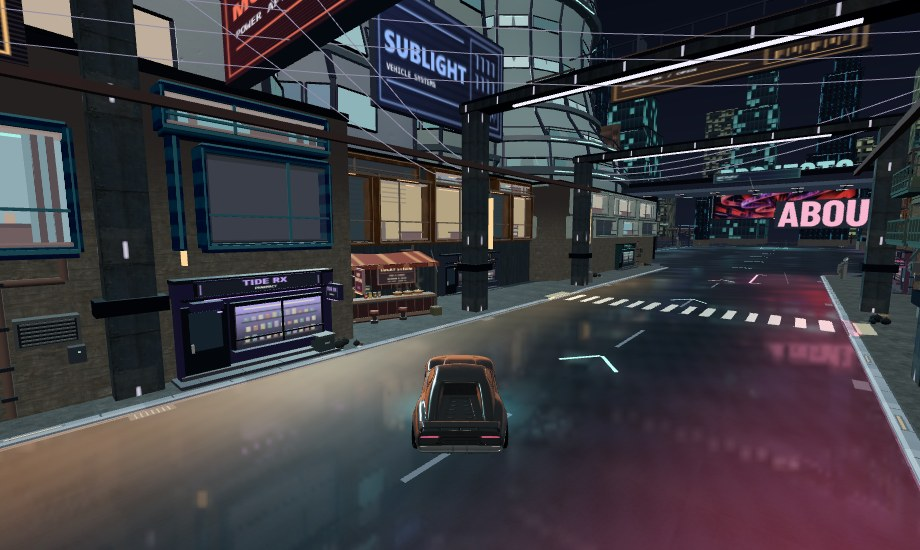

Alex Zhou
I’m a computer science grad student at CU Boulder. I make games and local AI tools. I’m also into branching stories and translated novels.
Projects
Car Go Vroom
Explore the neon portfolio city or race ghosts on the stunt course.
Play the game
AI experiments
Tidal Archipelago
Change the tides and watch thousands of creatures forage, migrate, and pass on traits.
Creative tools
These tools open when Adventure Studio is running on your computer.
One Neuron Over
Local experiments with how individual language-model neurons affect responses.
- Steer Change a neuron’s contribution and compare responses.
- Find Look for neurons linked to a concept and test them on new prompts.
- Sweep Test a range of neurons in both directions and save the responses.
- Steered chat Carry a steering intervention into a longer conversation.
- Neuron library Keep useful neuron coordinates and notes for later runs.